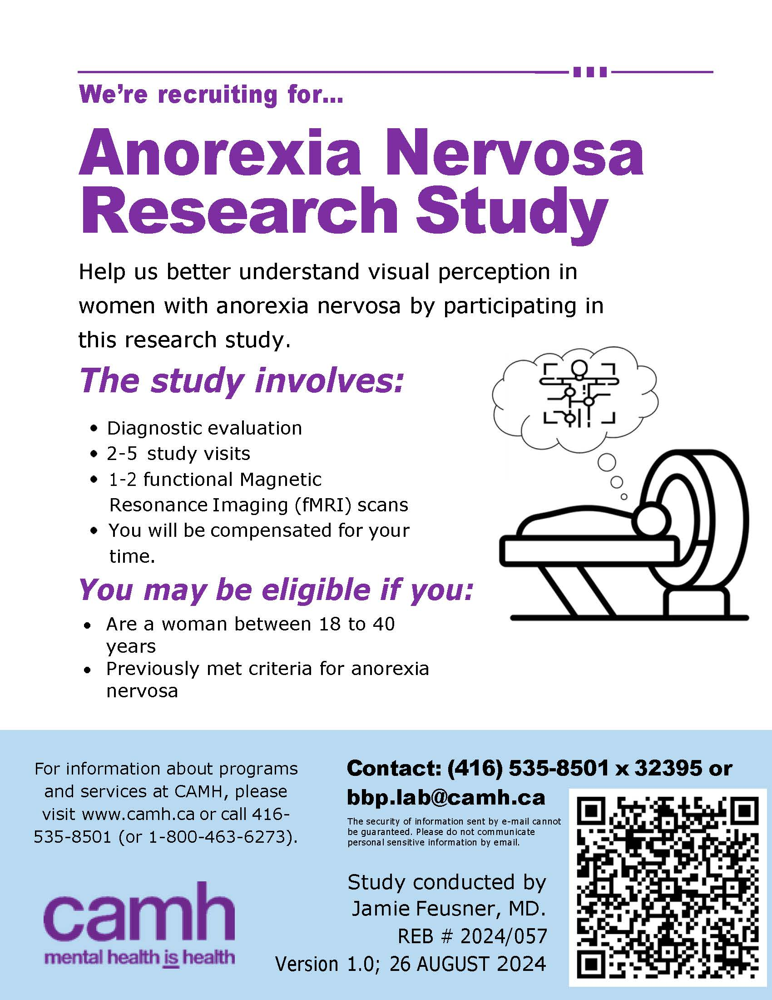

Visual Processing Dynamics in Women with Anorexia Nervosa
Anorexia nervosa (AN) is a debilitating condition with the highest mortality rate of all psychiatric disorders. Individuals with AN experience disturbed body image, anxiety, and atypical experiences of reward. However, while the former two symptoms have been studied and targeted during treatment, the latter is less understood.
The goal of this study is to understand how people with AN experience perceptual processing for appearance-related stimuli. Many individuals with AN show altered visual processing. Our study will help understand the neurobiology differences in perceptual processing in individuals with AN. The results of this study will hopefully uncover the neural mechanisms underlying AN in order to develop better treatments in the future.
We are recruiting females between the ages of 18-40 who have weight-restored AN, and healthy participants. Participation in this study involves 2-5 study visits.
The informed consent discussion and visit 1 will be done online via secure videoconferencing. All visits following visit 1 will require an in-person visit at the Centre for Addiction and Mental Health (CAMH).
Participation in the study involves:
You will be compensated for your time should you wish to participate and complete all study visits.
If you are interested in participating in this study, or if you would like to get more information, please contact the research team at bbp.lab@camh.ca
CAMH REB# 2024/057